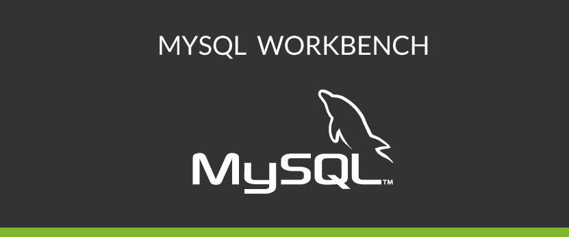

Apache NetbeansEs un entorno de desarrollo de código abierto, una plataforma de herramientas y un marco de aplicación que permite a los programadores de Java crear aplicaciones de escritorio, móviles y web. |

|
MySQL WorkbenchEs una herramienta visual de diseño de bases de datos que integra desarrollo de software, administración de bases de datos, diseño de bases de datos, gestión y mantenimiento para el sistema de base de datos MySQL. |
 |